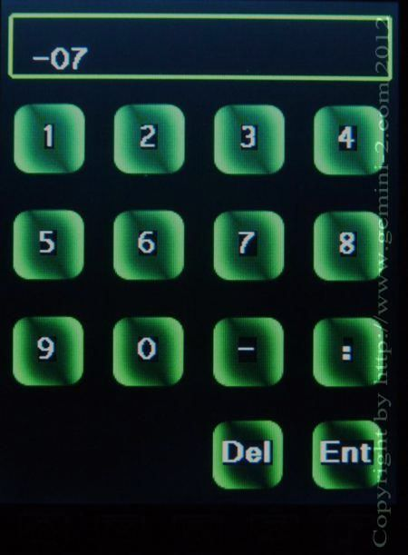

| Interactive Hand-Controller Menus - click on green button to Navigate |
|  | Here is where you set your time zone offset from UTC. Note: you do have to account for daylight saving time in this offset.
Positive offsets do not need a leading zero if they are only one digit.
Offsets West of UTC are
negative, and East of UTC are positive. Note: if a partial time zone offset is required, please enter it as hours:minutes such as +6:30 or -03:30 The date, time and this offset are used to compute the correct UTC time and date for Gemini-2 to calculate all of the star locations, along with your latitude and longitude. This offset can be in whole hours, half hours, quarter hours, or even in minutes. See the link below. The more accurate you can set the time, the more accurate your first star GOTO will be. Once you align on your first star, Gemini-2 will make time corrections from that star position, so time accuracy isn't very critical, except for the first GOTO Hit Ent button to go back to the previous menu. If you would prefer to only work in UTC, and not have to worry about daylight saving time changes, put 0 in this screen, and then Enter the UTC time and UTC date in the Time and Date locations. Gemini-2 will be perfectly happy using only UTC Here is more information on Half and Quarter timezones. Here is a Time Zone offset chart and here is one for the world. |